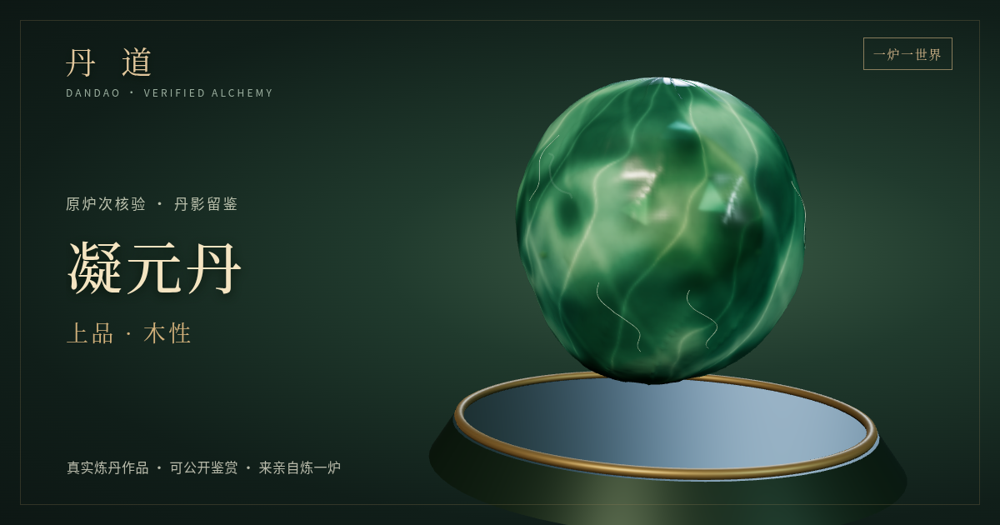
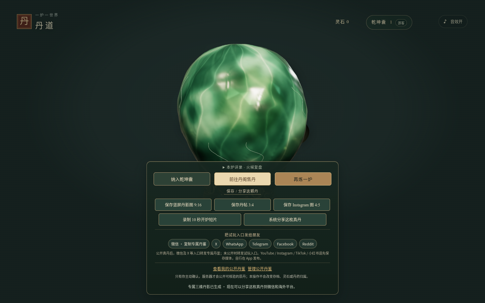
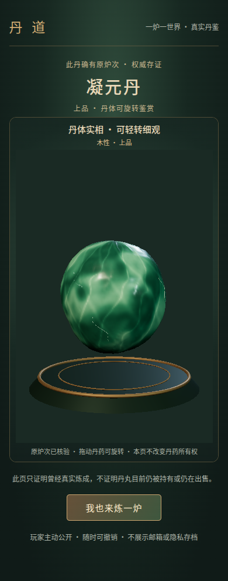

W149-GPU · VERIFIED PILL · REAL POSTGRESQL 18 · TRUSTED TASK BROKER
同一枚真丹。
从丹炉到 GPU，再回到丹鉴。
真正从空存档投药点火，自然等待七炉刻，炼成上品凝元丹。玩家确认公开后，受限服务端签发一次性任务，Z890的RTX 5070 Ti生成真实三维丹影，再由服务器核验并入库。最后由作者本人撤销，作品失效、游戏经济不变。
961ms本次真实七炉刻任务：GPU领取到回传
395KB1200×630原丹GPU封面PNG
610/610最新游戏主线+GPU模块全套测试通过
边界声明：本页展示Z890隔离本机真实GPU QA，不是假想原画，也不代表已经在正式服开启跨设备GPU自动渲染。正式W149神识版本正常在线；W149-GPU代码已合并但功能默认关闭。Z890生产Chrome沙箱仍需单独修复并实测才能授权上线。

01 · 真实原丹三维封面 从经PG验证的药性、品阶、外观seed还原；真实Chrome RTX5070Ti渲染，非AI概念图。
从炼成到公开 · 真实浏览器证据


真正完成的安全闭环
一 · 真丹
真实炼丹账本和所有权判定。没有炼成，不能被签发为公开丹影。
二 · 可信签发
GPU端先验证随机HMAC身份挑战，再领取一次性带签名和有效期的任务。
三 · 校验入库
服务器验证图片CRC/尺寸/SHA；只有丹鉴仍有效才能原子存入PG。
四 · 随时撤销
作品撤销后三处HTTP404，晚到图片不会复活。GPU下线自动调用旧CPU渲染。